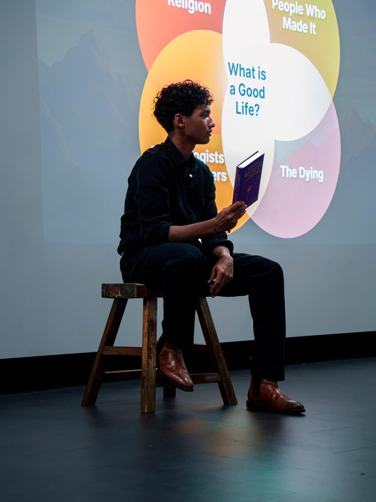

Real psychology, built into a clear, gentle path.
Our Canberra programme is grounded in established psychology and organised around one idea: lasting change happens in a particular order. Here's exactly what it covers.
You're not a problem to be solved. You're a person to be understood.
So much of what's aimed at young people starts from what's "wrong" with them. We start from the opposite belief: that given safety, honesty and the right tools, people grow themselves. The programme just holds a space steady enough that you can.
Everything is rooted in established psychology — attachment, emotional regulation, self-determination theory, and the science of how people actually change — delivered the way a good friend would: warmly, and without the jargon.
Most people chase goals first. We believe lasting change happens in a different order.
Each stage makes the next one possible. Tap any stage to see what it involves.
Self-BeliefBecome the Pilot
Learn to stop abandoning yourself when life gets hard. Build self-trust through small promises kept, challenge the inner critic, and recognise that many of the beliefs you hold about yourself were installed by repetition, pain, or proximity — not consciously chosen.
PerspectiveChange the Story
How you view yourself shapes every decision you make. Explore the difference between familiar thoughts and true thoughts, learn to question the "always," "never," and "nobody" stories your mind tells, and build a fair, honest inner coach instead of an inner enemy.
Connection & CommunicationLet People In
A good life is built through relationships. Practise vulnerability, learn how to communicate honestly, discover how to find "your people" through shared values rather than performance, and understand why the people who showed up matter more than the people who impressed you.
Meaning & PurposeBuild an Extra Ordinary Life
Extraordinary lives are often built through ordinary moments approached with attention and meaning. Clarify your values, identify what you stand for, and create a life that feels meaningful even when nobody is watching.
The staircase works in order. Self-belief creates perspective. Perspective creates connection. Connection creates meaning. Meaning creates a life you don't need to escape from.

Prem
Founder & Facilitator
"Extraordinary lives are built in ordinary moments."
Hello, my name is Prem Kultonik. I'm the founder of the Extraordinary Life, a self development programme created to help teens like myself talk and express the emotions we are so used to bottling up. To actually converse around what makes a life extraordinary and why do we want it, if you're curious on what that actually means. Come to a session and find out. See you soon :)
The first act of self-belief is noticing that the software was installed by someone else.
Our promise to the people who love them.
Trusting an organisation with someone you care about is a big deal. We don't take it lightly, and we'd never ask you to take us on faith. Here's our commitment to you.
We're an open book.
Ask for our safeguarding policy, insurance, facilitator qualifications or venue details — we'll send them gladly.
We'll talk to you directly.
Want a real conversation before they join? Book a call with a facilitator. No question is too small.
Consent is built in.
We take your privacy seriously, everything that we share is consensual.
We know our limits.
We're personal growth, not therapy. If your young person needs clinical support, we'll say so and help you find it.
It's an interactive conversation.
Sessions aren't lectures — they're guided, interactive conversations where young people take part and share at their own pace.
You'll hear from us if needed.
If anything concerning arises during a session, we follow clear safeguarding steps — and we'll contact you.
The best way to understand it is to experience it.
Come along to a session — $30, no pressure, and you're always free to just listen.
Save your place